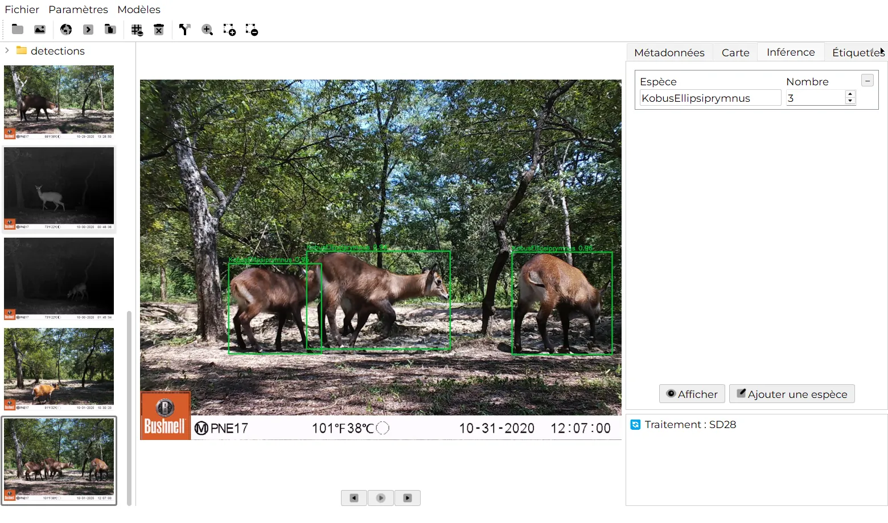
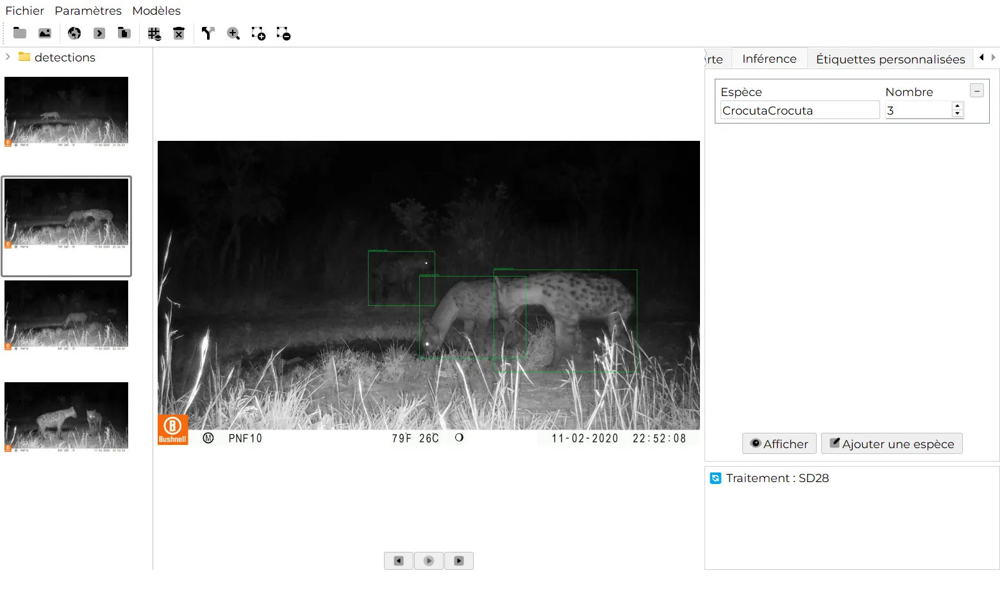
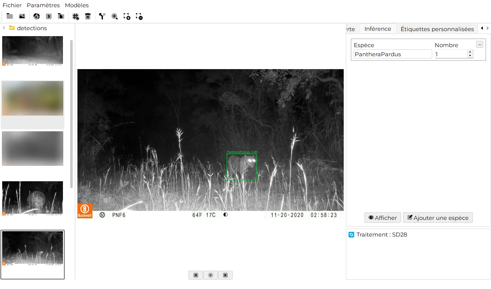
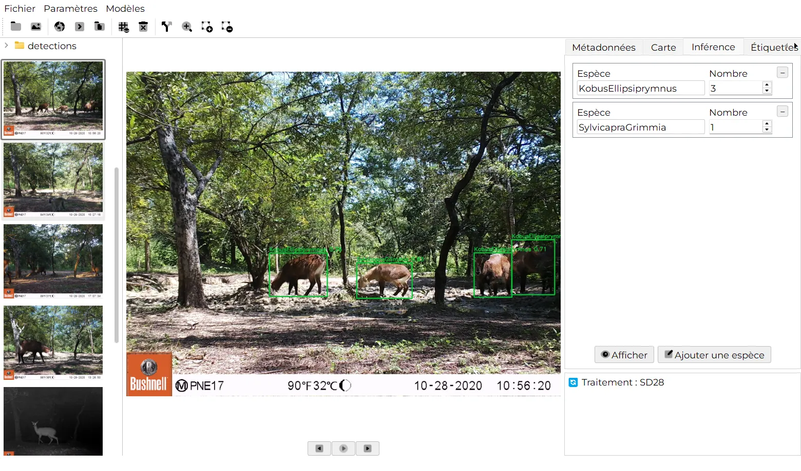
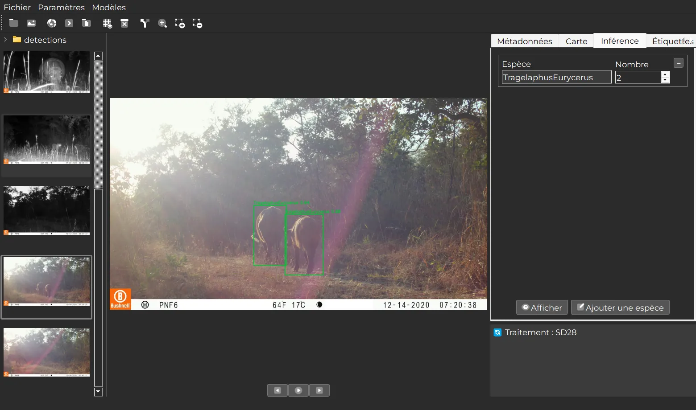

Détection et identification des espèces
MegaDetector repère les animaux, les personnes et les véhicules. Des classificateurs régionaux pour l’Afrique, l’Europe, l’Amazonie, la Nouvelle-Zélande et d’autres régions nomment les espèces.
Declas repère les animaux dans vos images et vidéos de pièges photographiques, identifie les espèces et vous fournit un seul fichier CSV prêt pour l’analyse. Gratuit, libre, et sans besoin d’internet.

Indiquez à Declas un dossier d’images de pièges photographiques. Il repère les animaux, les personnes et les véhicules, identifie les espèces avec un modèle régional, et chaque résultat reste modifiable.
MegaDetector repère les animaux, les personnes et les véhicules. Des classificateurs régionaux pour l’Afrique, l’Europe, l’Amazonie, la Nouvelle-Zélande et d’autres régions nomment les espèces.
Traitez un seul dossier ou tout un projet avec un dossier par station. Chaque dossier reçoit son propre fichier detections.json.
Les vidéos sont échantillonnées toutes les n images ; chaque image est analysée et sa date et son heure sont calculées à partir de la vidéo.
Corrigez un nom d’espèce ou un nombre, dessinez une boîte autour d’un animal oublié par le modèle ou supprimez une boîte erronée. Chaque modification est reprise dans le rapport.
Un modèle de profondeur estime la distance entre chaque animal et la caméra, avec une correction du champ de vision par station, prête pour l’échantillonnage par distance.
Les résultats, la date et l’heure EXIF, le GPS et vos propres étiquettes sont réunis dans un CSV, avec une ligne par espèce et par image.
Ouvrez Modèles › Extensions et téléchargez un détecteur ou un classificateur pour votre région.
Sélectionnez un dossier de station ou tout un projet. Les miniatures de chaque image et vidéo s’affichent à gauche.
Lancez l’analyse sur l’image affichée ou sur tous les dossiers d’un coup. La progression s’affiche dans le journal.
Contrôlez les boîtes, corrigez ce qui doit l’être, ajoutez des étiquettes, puis construisez le tableau en un clic.
Captures d’un inventaire en savane d’Afrique de l’Ouest traité avec le Sub-Saharan Africa Wildlife Detector, y compris des prises de vue infrarouges de nuit.




Gratuit pour toujours. Pas de compte, pas d’envoi en ligne, pas de limite sur le nombre d’images.